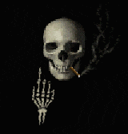
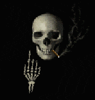
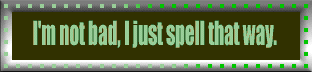
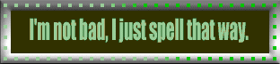

Project 3: Eavespell


 

O v e r v i e w
Eavespell is the culmination of two words; Eaves (The overhanging edge of a roof) and Spell (to spell a word). I chose this name because it was relevant to the game and had a kinda mystical sound to it.
A b o u t _ T h i s _ P r o j e c t
Development Time: 6 WeeksDue Date: 15th March 2024
Final score: 90/100

Final Evaluation
"I think overall this game went better than the last because I spent more time on it. There was a rush to get it done in the end and it still lacks a lot of features that I would have wanted but I think it is better than the 2D game. In the end I spent more time creating the assets and the level than I would have liked and less time dedicated to coding and adding features to the game. I’m still getting better at scripting so I am not the best at things like coding the combat or AI but I tried my hardest to make it good in this game. My main focus was again on the art and design of the game but I am proud that I got some features working that I consider to be advanced."
Plus, Minus and Improvements
Pluses: I think what went well with my game is that I was able to actually finish a full game and stick to the plan that I set out for myself. By the end of the project I was able to produce and publish a game that I was happy with and that somewhat followed the theme of being an educational game. I was able to implement most of what I wanted at the start of the project, unlike my last where I had to sacrifice a lot of my game to get a working build. By laying a plan out at the start and sticking to it, allowing myself ample time to get things finished I was able to finish it in time. I was also able to focus effort into Audio, Visual and Interactive parts of the game. I think that I wasn't as over ambitious as I was before and reached by goal.
Minuses: I think that one issues while creating my game was my organization. Near the end I was not able to keep track of all the scripts that I had. I was trying to manage about 40 scripts, half of which linked to one another and made calls between them. I didn't really have a plan or system from the beginning of the game about how my scripts would work so they ended up very unorganised and incoherent. During the last week I started writing out how my scripts linked and worked together on paper to help understand and this helped slightly but the complexity and over complicity was very confusing and cost a lot of time.
Improvements: In the future I think, even though I did a bit better with time management, my overall management and speed should be improved. This could mean using software like trello to plan out milestones or just having a simple checklist each day. Towards the end I did start to record and write checklists and this did help me with completing my tasks. Time management and time blocking would be another effective strategy for helping me pace myself with development. At the start I spent a lot of time working on code and got a bit burnt out, because I generally enjoy asset making more, so I took a break out of demotivation. Perhaps I should try to dedicate equal time to things like assets and then code at the same time. Also taking rests and break during development will help me to avoid burnout. I also believe that creating a clear meta plan or diagram of your script system at the beginning of the project is important. This can be developed upon and updated and most importantly recorded for future reference. This will help tremendously with being able to comprehend your scripts and save lost of time and effort.
Overall, I think that this project went well and better compared to my last project. I dealt better with time management and created a product that feels more complete at least than the last one. At the start my goals where to full finish a game while also not sacrificing things like audio and visual elements. I decided to work on a 2D game and making it an educational game was a good genre for a 2D game. A 2D would be easy to create and finish. I firstly focused on creating the code an system for my game, this helped me and gave me time to think about how exactly I would design the graphics of the game. This was a strong point of the project and meant that I had plenty of time to meditate on what design I wanted while working on a system that works. I worked on creating a basic prototype scene that I could then copy and paste essentially between scenes, only having to really replace the assets each time. After a while I realised that I wanted different methods of attacking for different enemies and different effect types which lead to the scripts becoming overcrowded with variables and toggles for different systems. This is what lead to most of my struggles while creating the game, and cost me the most time and effort. This was a large drawback and meant that towards the end I was more focused and preoccupied with code and fixing small nuances. The structure I had built was good but by the end modification was hard and meant digging back into my spaghetti code. So overall I believe the one thing I could have done better was to organise and document my system from the beginning. Even a simple visualisation or flowchart would have helped me to plan the system better but I created my flow chart too late. But I still think that it went well and that I was able to persist through my code errors.


 
